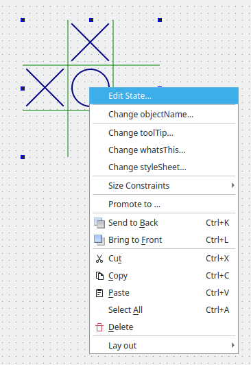

Task Menu Extension
Creating a custom widget plugin for Qt Designer and providing custom task menu entries that are associated with the plugin.
The Task Menu Extension example shows how to create a custom widget plugin for Qt Designer, and how to use the QDesignerTaskMenuExtension class to provide custom task menu entries associated with the plugin.

To provide a custom widget that can be used with Qt Designer, we need to supply a self-contained implementation. In this example we use a custom widget designed to show the task menu extension feature: The TicTacToe widget.
An extension is an object which modifies the behavior of Qt Designer. The QDesignerTaskMenuExtension can provide custom task menu entries when a widget with this extension is selected.
There are four available types of extensions in Qt Designer:
- QDesignerContainerExtension provides an extension that allows you to add (and delete) pages to a multi-page container plugin in Qt Designer.
- QDesignerMemberSheetExtension provides an extension that allows you to manipulate a widget's member functions which is displayed when configuring connections using Qt Designer's mode for editing signals and slots.
- QDesignerPropertySheetExtension provides an extension that allows you to manipulate a widget's properties which is displayed in Qt Designer's property editor.
- QDesignerTaskMenuExtension provides an extension that allows you to add custom menu entries to Qt Designer's task menu.
You can use all the extensions following the same pattern as in this example, only replacing the respective extension base class. For more information, see the Qt Designer C++ Classes.
The Task Menu Extension example consists of five classes:
TicTacToeis a custom widget that lets the user play the Tic-Tac-Toe game.TicTacToePluginexposes theTicTacToeclass to Qt Designer.TicTacToeTaskMenuFactorycreates aTicTacToeTaskMenuobject.TicTacToeTaskMenuprovides the task menu extension, i.e the plugin's associated task menu entries.TicTacToeDialoglets the user modify the state of a Tic-Tac-Toe plugin loaded into Qt Designer.
The project file for custom widget plugins needs some additional information to ensure that they will work within Qt Designer. For example, custom widget plugins rely on components supplied with Qt Designer, and this must be specified in the project file that we use. We will first take a look at the plugin's project file.
Then we will continue by reviewing the TicTacToePlugin class, and take a look at the TicTacToeTaskMenuFactory and TicTacToeTaskMenu classes. Finally, we will review the TicTacToeDialog class before we take a quick look at the TicTacToe widget's class definition.
Project files
CMake
The project files need to state that a plugin linking to the Qt Designer libraries is to be built:
find_package(Qt6 REQUIRED COMPONENTS Core Designer Gui Widgets)
qt_add_plugin(taskmenuextension)
target_link_libraries(taskmenuextension PUBLIC
Qt::Core
Qt::Designer
Qt::Gui
Qt::Widgets
)
The following example shows how to add the header and source files of the widget:
target_sources(taskmenuextension PRIVATE
tictactoe.cpp tictactoe.h
tictactoedialog.cpp tictactoedialog.h
tictactoeplugin.cpp tictactoeplugin.h
tictactoetaskmenu.cpp tictactoetaskmenu.h
)
We provide an implementation of the plugin interface so that Qt Designer can use the custom widget. In this particular example we also provide implementations of the task menu extension and the extension factory as well as a dialog implementation.
It is important to ensure that the plugin is installed in a location that is searched by Qt Designer. We do this by specifying a target path for the project and adding it to the list of items to install:
set(INSTALL_EXAMPLEDIR "${QT6_INSTALL_PREFIX}/${QT6_INSTALL_PLUGINS}/designer")
install(TARGETS taskmenuextension
RUNTIME DESTINATION "${INSTALL_EXAMPLEDIR}"
BUNDLE DESTINATION "${INSTALL_EXAMPLEDIR}"
LIBRARY DESTINATION "${INSTALL_EXAMPLEDIR}"
)
The task menu extension is created as a library. It will be installed alongside the other Qt Designer plugins when the project is installed (using ninja install or an equivalent installation procedure).
For more information about plugins, see the How to Create Qt Plugins documentation.
qmake
The following example shows how to link a plugin to the Qt Designer libraries:
TEMPLATE = lib CONFIG += plugin QT += widgets designer
The following example shows how to add the header and source files of the widget:
HEADERS += tictactoe.h \
tictactoedialog.h \
tictactoeplugin.h \
tictactoetaskmenu.h
SOURCES += tictactoe.cpp \
tictactoedialog.cpp \
tictactoeplugin.cpp \
tictactoetaskmenu.cpp
OTHER_FILES += tictactoe.json
The following example shows how to install a plugin to the Qt Designer's plugin path:
target.path = $$[QT_INSTALL_PLUGINS]/designer INSTALLS += target
TicTacToePlugin Class Definition
The TicTacToePlugin class exposes the TicTacToe class to Qt Designer. Its definition is equivalent to the Custom Widget Plugin example's plugin class which is explained in detail. The only part of the class definition that is specific to this particular custom widget is the class name.
To ensure that Qt recognizes the widget as a plugin, export relevant information about the widget by adding the Q_PLUGIN_METADATA() macro:
#ifndef TICTACTOEPLUGIN_H #define TICTACTOEPLUGIN_H #include <QtUiPlugin/QDesignerCustomWidgetInterface> class QIcon; class QWidget; class TicTacToePlugin : public QObject, public QDesignerCustomWidgetInterface { Q_OBJECT Q_PLUGIN_METADATA(IID "org.qt-project.Qt.QDesignerCustomWidgetInterface") Q_INTERFACES(QDesignerCustomWidgetInterface) public: explicit TicTacToePlugin(QObject *parent = nullptr); QString name() const override; QString group() const override; QString toolTip() const override; QString whatsThis() const override; QString includeFile() const override; QIcon icon() const override; bool isContainer() const override; QWidget *createWidget(QWidget *parent) override; bool isInitialized() const override; void initialize(QDesignerFormEditorInterface *formEditor) override; QString domXml() const override; private: bool initialized = false; }; #endif
The plugin class provides Qt Designer with basic information about our plugin, such as its class name and its include file. Furthermore it knows how to create instances of the TicTacToe widget. TicTacToePlugin also defines the initialize() function which is called after the plugin is loaded into Qt Designer. The function's QDesignerFormEditorInterface parameter provides the plugin with a gateway to all of Qt Designer's API's.
The TicTacToePlugin class inherits from both QObject and QDesignerCustomWidgetInterface. It is important to remember, when using multiple inheritance, to ensure that all the interfaces (i.e. the classes that doesn't inherit Q_OBJECT) are made known to the meta object system using the Q_INTERFACES() macro. This enables Qt Designer to use qobject_cast() to query for supported interfaces using nothing but a QObject pointer.
TicTacToePlugin Class Implementation
The TicTacToePlugin class implementation is in most parts equivalent to the Custom Widget Plugin example's plugin class:
TicTacToePlugin::TicTacToePlugin(QObject *parent) : QObject(parent) { } QString TicTacToePlugin::name() const { return u"TicTacToe"_s; } QString TicTacToePlugin::group() const { return u"Display Widgets [Examples]"_s; } QString TicTacToePlugin::toolTip() const { return u"Tic Tac Toe Example, demonstrating class QDesignerTaskMenuExtension (C++)"_s; } QString TicTacToePlugin::whatsThis() const { return {}; } QString TicTacToePlugin::includeFile() const { return u"tictactoe.h"_s; } QIcon TicTacToePlugin::icon() const { return {}; } bool TicTacToePlugin::isContainer() const { return false; } QWidget *TicTacToePlugin::createWidget(QWidget *parent) { auto *ticTacToe = new TicTacToe(parent); ticTacToe->setState(u"-X-XO----"_s); return ticTacToe; } bool TicTacToePlugin::isInitialized() const { return initialized; }
The only function that differs significantly is the initialize() function:
void TicTacToePlugin::initialize(QDesignerFormEditorInterface *formEditor) {
The initialize() function takes a QDesignerFormEditorInterface object as argument. The QDesignerFormEditorInterface class provides access to Qt Designer's components.
In Qt Designer you can create two kinds of plugins: custom widget plugins and tool plugins. QDesignerFormEditorInterface provides access to all the Qt Designer components that you normally need to create a tool plugin: the extension manager, the object inspector, the property editor and the widget box. Custom widget plugins have access to the same components.
if (initialized)
return;
auto *manager = formEditor->extensionManager();
Q_ASSERT(manager != nullptr);
When creating extensions associated with custom widget plugins, we need to access Qt Designer's current extension manager which we retrieve from the QDesignerFormEditorInterface parameter.
Qt Designer's QDesignerFormEditorInterface holds information about all Qt Designer's components: The action editor, the object inspector, the property editor, the widget box, and the extension and form window managers.
The QExtensionManager class provides extension management facilities for Qt Designer. Using Qt Designer's current extension manager you can retrieve the extension for a given object. You can also register and unregister an extension for a given object. Remember that an extension is an object which modifies the behavior of Qt Designer.
When registrering an extension, it is actually the associated extension factory that is registered. In Qt Designer, extension factories are used to look up and create named extensions as they are required. So, in this example, the task menu extension itself is not created until a task menu is requested by the user.
manager->registerExtensions(new TicTacToeTaskMenuFactory(manager),
Q_TYPEID(QDesignerTaskMenuExtension));
initialized = true;
}
QString TicTacToePlugin::domXml() const
{
return uR"(
<ui language="c++">
<widget class="TicTacToe" name="ticTacToe"/>
<customwidgets>
<customwidget>
<class>TicTacToe</class>
<propertyspecifications>
<tooltip name="state">Tic Tac Toe state</tooltip>
<stringpropertyspecification name="state" notr="true" type="singleline"/>
</propertyspecifications>
</customwidget>
</customwidgets>
</ui>
)"_s;
}
We create a TicTacToeTaskMenuFactory object that we register using Qt Designer's current extension manager retrieved from the QDesignerFormEditorInterface parameter. The first argument is the newly created factory and the second argument is an extension identifier which is a string. The Q_TYPEID() macro simply converts the string into a QLatin1String.
The TicTacToeTaskMenuFactory class is a subclass of QExtensionFactory. When the user request a task menu by clicking the right mouse button over a widget with the specified task menu extension, Qt Designer's extension manager will run through all its registered factories invoking the first one that is able to create a task menu extension for the selected widget. This factory will in turn create a TicTacToeTaskMenu object (the extension).
We omit to reimplement the QDesignerCustomWidgetInterface::domXml() function (which include default settings for the widget in the standard XML format used by Qt Designer), since no default values are necessary.
Q_PLUGIN_METADATA(IID "org.qt-project.Qt.QDesignerCustomWidgetInterface")
Finally, we use the Q_PLUGIN_METADATA() macro to export the TicTacToePlugin class for use with Qt's plugin handling classes: This macro ensures that Qt Designer can access and construct the custom widget. Without this macro, there is no way for Qt Designer to use the widget.
TicTacToeTaskMenuFactory Class Definition
The TicTacToeTaskMenuFactory class inherits QExtensionFactory which provides a standard extension factory for Qt Designer.
class TicTacToeTaskMenuFactory : public QExtensionFactory { Q_OBJECT public: explicit TicTacToeTaskMenuFactory(QExtensionManager *parent = nullptr); protected: QObject *createExtension(QObject *object, const QString &iid, QObject *parent) const override; };
The subclass's purpose is to reimplement the QExtensionFactory::createExtension() function, making it able to create a TicTacToe task menu extension.
TicTacToeTaskMenuFactory Class Implementation
The class constructor simply calls the QExtensionFactory base class constructor:
TicTacToeTaskMenuFactory::TicTacToeTaskMenuFactory(QExtensionManager *parent) : QExtensionFactory(parent) { }
As described above, the factory is invoked when the user request a task menu by clicking the right mouse button over a widget with the specified task menu extension in Qt Designer.
Qt Designer's behavior is the same whether the requested extension is associated with a container, a member sheet, a property sheet or a task menu: Its extension manager runs through all its registered extension factories calling createExtension() for each until one responds by creating the requested extension.
QObject *TicTacToeTaskMenuFactory::createExtension(QObject *object, const QString &iid, QObject *parent) const { if (iid != Q_TYPEID(QDesignerTaskMenuExtension)) return nullptr; if (auto *tic = qobject_cast<TicTacToe*>(object)) return new TicTacToeTaskMenu(tic, parent); return nullptr; }
So the first thing we do in TicTacToeTaskMenuFactory::createExtension() is to check if the requested extension is a task menu extension. If it is, and the widget requesting it is a TicTacToe widget, we create and return a TicTacToeTaskMenu object. Otherwise, we simply return a null pointer, allowing Qt Designer's extension manager to continue its search through the registered factories.
TicTacToeTaskMenu Class Definition
The TicTacToeTaskMenu class inherits QDesignerTaskMenuExtension which allows you to add custom entries (in the form of QActions) to the task menu in Qt Designer.
class TicTacToeTaskMenu : public QObject, public QDesignerTaskMenuExtension { Q_OBJECT Q_INTERFACES(QDesignerTaskMenuExtension) public: explicit TicTacToeTaskMenu(TicTacToe *tic, QObject *parent); QAction *preferredEditAction() const override; QList<QAction *> taskActions() const override; private slots: void editState(); private: QAction *editStateAction; TicTacToe *ticTacToe; };
We reimplement the preferredEditAction() and taskActions() functions. Note that we implement a constructor that takes two arguments: the parent widget, and the TicTacToe widget for which the task menu is requested.
In addition we declare the private editState() slot, our custom editStateAction and a private pointer to the TicTacToe widget which state we want to modify.
TicTacToeTaskMenu Class Implementation
TicTacToeTaskMenu::TicTacToeTaskMenu(TicTacToe *tic, QObject *parent) : QObject(parent) , editStateAction(new QAction(tr("Edit State..."), this)) , ticTacToe(tic) { connect(editStateAction, &QAction::triggered, this, &TicTacToeTaskMenu::editState); }
In the constructor we first save the reference to the TicTacToe widget sent as parameter, i.e the widget which state we want to modify. We will need this later when our custom action is invoked. We also create our custom editStateAction and connect it to the editState() slot.
void TicTacToeTaskMenu::editState() { TicTacToeDialog dialog(ticTacToe); dialog.exec(); }
The editState() slot is called whenever the user chooses the Edit State... option in a TicTacToe widget's task menu. The slot creates a TicTacToeDialog presenting the current state of the widget, and allowing the user to edit its state by playing the game.
QAction *TicTacToeTaskMenu::preferredEditAction() const { return editStateAction; }
We reimplement the preferredEditAction() function to return our custom editStateAction as the action that should be invoked when selecting a TicTacToe widget and pressing F2 .
QList<QAction *> TicTacToeTaskMenu::taskActions() const { return QList<QAction *>{editStateAction}; }
We reimplement the taskActions() function to return a list of our custom actions making these appear on top of the default menu entries in a TicTacToe widget's task menu.
TicTacToeDialog Class Definition
The TicTacToeDialog class inherits QDialog. The dialog lets the user modify the state of the currently selected Tic-Tac-Toe plugin.
class TicTacToeDialog : public QDialog { Q_OBJECT public: explicit TicTacToeDialog(TicTacToe *plugin = nullptr, QWidget *parent = nullptr); QSize sizeHint() const override; private slots: void resetState(); void saveState(); private: TicTacToe *editor; TicTacToe *ticTacToe; QDialogButtonBox *buttonBox; };
We reimplement the sizeHint() function. We also declare two private slots: resetState() and saveState(). In addition to the dialog's buttons and layouts we declare two TicTacToe pointers, one to the widget the user can interact with and the other to the original custom widget plugin which state the user wants to edit.
TicTacToeDialog Class Implementation
TicTacToeDialog::TicTacToeDialog(TicTacToe *tic, QWidget *parent) : QDialog(parent) , editor(new TicTacToe) , ticTacToe(tic) , buttonBox(new QDialogButtonBox(QDialogButtonBox::Ok | QDialogButtonBox::Cancel | QDialogButtonBox::Reset)) { editor->setState(ticTacToe->state()); connect(buttonBox->button(QDialogButtonBox::Reset), &QAbstractButton::clicked, this, &TicTacToeDialog::resetState); connect(buttonBox, &QDialogButtonBox::accepted, this, &TicTacToeDialog::saveState); connect(buttonBox, &QDialogButtonBox::rejected, this, &QDialog::reject); auto *mainLayout = new QVBoxLayout(this); mainLayout->addWidget(editor); mainLayout->addWidget(buttonBox); setWindowTitle(tr("Edit State")); }
In the constructor we first save the reference to the TicTacToe widget sent as parameter, i.e the widget which state the user want to modify. Then we create a new TicTacToe widget, and set its state to be equivalent to the parameter widget's state.
Finally, we create the dialog's buttons and layout.
QSize TicTacToeDialog::sizeHint() const { return {250, 250}; }
We reimplement the sizeHint() function to ensure that the dialog is given a reasonable size.
void TicTacToeDialog::resetState() { editor->clearBoard(); }
The resetState() slot is called whenever the user press the Reset button. The only thing we do is to call the clearBoard() function for the editor widget, i.e. the TicTacToe widget we created in the dialog's constructor.
void TicTacToeDialog::saveState() {
The saveState() slot is called whenever the user press the OK button, and transfers the state of the editor widget to the widget which state we want to modify. In order to make the change of state visible to Qt Designer we need to set the latter widget's state property using the QDesignerFormWindowInterface class.
QDesignerFormWindowInterface provides you with information about the associated form window as well as allowing you to alter its properties. The interface is not intended to be instantiated directly, but to provide access to Qt Designer's current form windows controlled by Qt Designer's form window manager.
If you are looking for the form window containing a specific widget, you can use the static QDesignerFormWindowInterface::findFormWindow() function:
if (auto *formWindow = QDesignerFormWindowInterface::findFormWindow(ticTacToe))
formWindow->cursor()->setProperty("state", editor->state());
After retrieving the form window of the widget (which state we want to modify), we use the QDesignerFormWindowInterface::cursor() function to retrieve the form window's cursor.
The QDesignerFormWindowCursorInterface class provides an interface to the form window's text cursor. Once we have cursor, we can finally set the state property using the QDesignerFormWindowCursorInterface::setProperty() function.
accept();
}
In the end we call the QEvent::accept() function which sets the accept flag of the event object. Setting the accept parameter indicates that the event receiver wants the event. Unwanted events might be propagated to the parent widget.
TicTacToe Class Definition
The TicTacToe class is a custom widget that lets the user play the Tic-Tac-Toe game.
class TicTacToe : public QWidget { Q_OBJECT Q_PROPERTY(QString state READ state WRITE setState) public: explicit TicTacToe(QWidget *parent = nullptr); QSize minimumSizeHint() const override; QSize sizeHint() const override; void setState(const QString &newState); QString state() const; void clearBoard(); protected: void mousePressEvent(QMouseEvent *event) override; void paintEvent(QPaintEvent *event) override; private: static constexpr char16_t Empty = '-'; static constexpr char16_t Cross = 'X'; static constexpr char16_t Nought = 'O'; QRect cellRect(int position) const; int cellWidth() const { return width() / 3; } int cellHeight() const { return height() / 3; } QString myState; int turnNumber = 0; };
The main details to observe in the TicTacToe class defintion is the declaration of the state property and its state() and setState() functions.
We need to declare the TicTacToe widget's state as a property to make it visible to Qt Designer; allowing Qt Designer to manage it in the same way it manages the properties the TicTacToe widget inherits from QWidget and QObject, for example featuring the property editor.